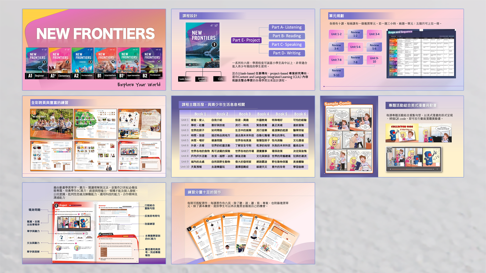

Tina Hong
我熱愛挑戰與內容企劃，擅長跨部門協作、客戶關係經營與問題解決。
擁有八年以上專案執行與服務經驗，能獨立作業亦擅長團隊合作。
期望在專案企劃領域中，結合創意與結構性思維，跟著團隊夥伴一起合作，創造無限的可能。
我熱愛挑戰與內容企劃，擅長跨部門協作、客戶關係經營與問題解決。
擁有八年以上專案執行與服務經驗，能獨立作業亦擅長團隊合作。
期望在專案企劃領域中，結合創意與結構性思維，跟著團隊夥伴一起合作，創造無限的可能。
2023年度達成率147%，2024年度達成率144%。

獨立負責腳本規劃、錄音、螢幕錄影及後製，清晰呈現系統操作流程。
AI 引擎協作教案與自動化輸出。

負責腳本規劃、錄音協調（真人與AI音檔整合）、後製剪輯，將內容整理成完整Podcast及影片版。
編寫介紹講稿，確保資訊正確傳達。

策劃書籍內容呈現方式，執行視覺設計與後期影片剪輯，提升推廣吸引力。
負責百本英文讀本校對與音檔檢核，確保語言與錄音品質，提升學習體驗與滿意度。

製作簡易展示文件，提供公司內部訓練或客戶使用。
